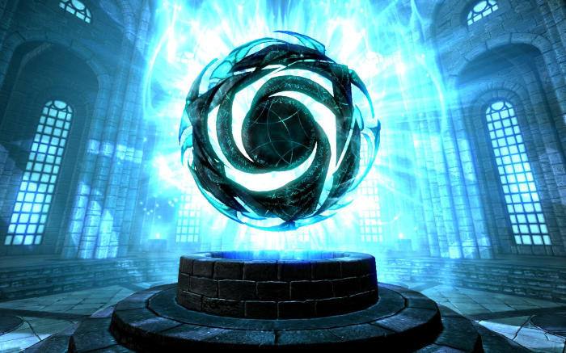

Parler de Mythologie dans le cas de Tamriel est un abus de langages pour la simple et bonne raison que les êtres supérieurs existent et qu’ils font, pour la plupart, souvent des apparitions sur le sol de Nirn pour jouer ou réorienter le destin des mortels.
Ces êtres immortels et surpuissants sont des esprits originels appelés les Et'Ada. Ils sont séparés en deux catégories, les bienfaisants, les Aedra, et les malfaisants, les Daedra. Encore une fois, c’est un abus de de les diviser ainsi. Certains Daedra se montrent neutres voire amicaux quand des Aedra, eux, ne prendront pas parti pour les mortels.
D’un point de vue étymologie, Aedra signifie « nos ancêtres » là où Daedra veut dire « Pas nos ancêtres ». Aussi, Aedra et Daedra sont les formes plurielles. Au singulier, il faut dire Aedroth et Daedroth.

L'Oeil de Magnus, un des artefact de l'Aedroth éponyme.
Les Aedra
Les Aedras sont les entités bienveillantes qui ont participé à la création du monde. Il existe autant de Aedras qu’il peut exister de concepts et d’élément comme Shor, l’Aedra des Souterrains, Magnus, Aedra de la Sorcellerie, ou Y’ffre, Aedra de la Forêt.
Toutefois, il y a, parmi tous ces êtres immortels, huit Aedra qui sont vénérés au-dessus de tout. Il s’agit des Huit Divins.
Akatosh
Dieu Dragon du Temps, il est considéré comme le premier des Aedra existant et le principal des Huit Divin. Il fut celui qui bannit tous les Aedra et Daedra existant sur d’autres plans, laissant le Mundus, plan dans lequel se trouve Tamriel, aux mortels.
On lui accorde souvent qu’il serait le père des dragons.
Arkay
Fils d’Akatosh, il est le dieu du cycle de la Vie et la Mort, mais aussi des saisons. Sa bénédiction empêche l’âme d’être utilisée par d’autres personnes et sa loi empêche les corps enterrés selon son rituel d’être réanimé. C’est pour cette raison que les mortels essayent au maximum de demander l’aide d’un prêtre Arkay pour inhumer les défunts.
Dibella
Déesse de la Passion, de la Beauté et de l’Art, Dibella est une Aedra très populaire bien que très souvent mal vue. En effet, son culte, par la passion, est souvent liée au sexe et la luxure. Ceux et celles qui le pratiquent le fond alors bien souvent en secret.
En plus des différents temples dédiés, il existe des Temples des Divins.
Il est possible d'y trouver les autels de chacun des Divins.
Julianos
Il est l’Aedroth de la littérature, de la loi, de l’histoire et de la contradiction. Bien que faisant partie des Huit Divins, il reste facilement en retrait et son culte n’est pratiqué que par quelques bardes et écrivains.
Kynareth
Aussi parfois appelé Kyne, et le la divinité du ciel, du vent et des esprits et Patronne des marins et des voyageurs. Il est coutume de l’invoquer à chaque naissance pour que l’enfant bénéficie d’une bonne fortune dans la vie.
Les légendes racontent qu’elle aurait engendré les premiers Hommes au sommet de la Gorge du Monde en Bordeciel, ce qui lui vaudrait le nom de « Mère des Hommes ».
Mara
Mara, aussi appelée Déesse Mère, est l’Aedroth de l’amour et de la fertilité. Elle est la conjointe d’Akatosh et la mère d’Arkay. Son culte est quasiment universel si bien qu’elle est invoquée à chaque mariage pour souhaiter le bonheur et la fertilité aux jeunes mariés.
En Bordeciel, il est coutume de porter un de ses colliers quand on cherche l’amour.
Stendarr
Il est le Dieu de la Miséricorde et de la Justice, aussi appelé le Défenseur des Hommes. Il mène une lutte sans merci contre les Deadra et est fortement opposé à la nécromancie, au vampirisme et à la lycanthropie.
Il prône la bonté et la générosité envers son prochain et la protection des faibles. Ses prêtres accueillent les faibles, les malades et les désespérés pendant que ses vigiles partent en croisade pour contrer ce que le dieu considère comme des fléaux pour les hommes.
Zénithar
Parmi les Huit Divins, il est celui qui est le plus proche des hommes. Dieu du Travail et du Commerce, on en sait très peu sur ses origines. Malgré tout, il est souvent connu comme le « Dieu qui sort toujours vainqueur ».
Les Daedra
Les Daedra, contrairement aux Aedra, sont des êtres considérés comme malfaisants. Bien que bannis du plan des mortels par Akatosh, ils aiment tenter d’y revenir ou encore interférer avec les mortels de là où ils sont, leur jouant des tours ou s’amusant simplement avec eux.
Il existe une variété monstre de Deadra, des plus mineurs inoffensifs aux être de légendes qui terrifient rien que par leurs noms. Tout en haut se trouvent les Princes Daedra. Ils sont les plus puissants et bien souvent considérés comme des dieux. Ils sont au nombre de dix-sept.
Comme dit plus haut, ils sont considérés comme malfaisants. Ce n’est pourtant pas le cas de tous. Nocturne dite la Reine de la Nuit, par exemple, est une Deadroth neutre qui a décidé de passer un pacte avec trois maitres-voleurs qui devinrent ses Rossignols. Elle leur accorde sa chance et eux, en échange, promettent de veiller le Mausolée du Crépuscule, l’antre de son culte, dans la vie comme dans la mort.
D’autres, comme Azura ou Méridia, sont considérées comme de bonnes Daedra. Elles œuvrent toutes les deux dans leur coin pour aider les hommes et ont en horreur la nécromancie et l’utilisation de l’âme humaine.